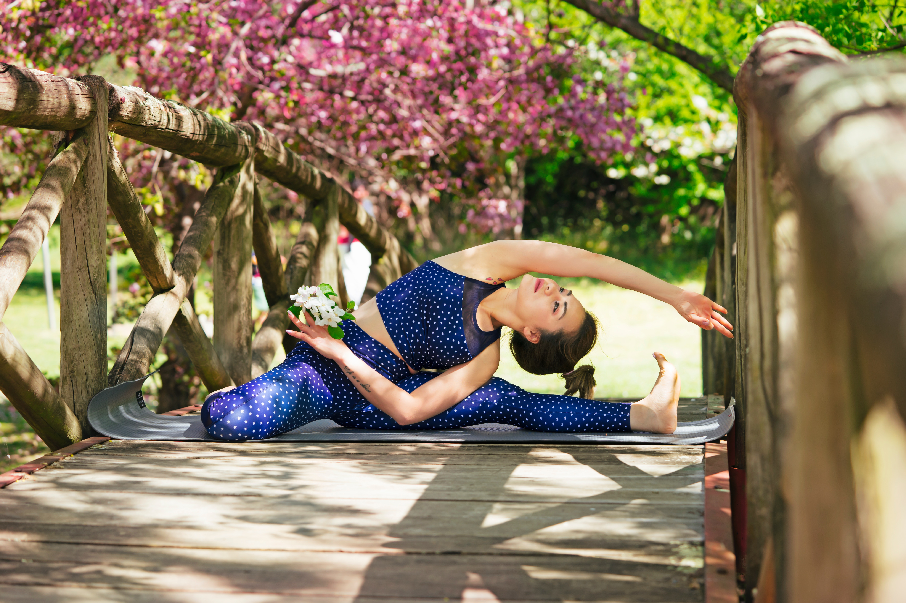

다음은 운동의 순서와 효능에 관한 이야기다.
먼저, 헬스장에 가서는 제일 먼저 스트레칭을 해야 한다. 근육을 이완시켜줘야하기 때문이다. 그 후부터는 근력운동과 자전거를 번갈아가며 운동한다.
집으로 돌아와서는, 자기 전에 스트레칭을 한다.
꾸준한 운동은 신체 뿐 아니라 뇌 건강에도 매우 좋다. 뿐만아니라 머리도 좋아진다.이것은 연구결과라도 증명되었으니, 못 믿겠으면 사진 밑에 링크를 클릭하라.

꾸준히 운동하면 머리도 좋아진다.운동을 과하게 하면 다음에 가기 싫어질 수 있으니, 적당한 선에서 꾸준히 하도록 하자. 습관을 기르는 것이 가장 중요할 것이다.